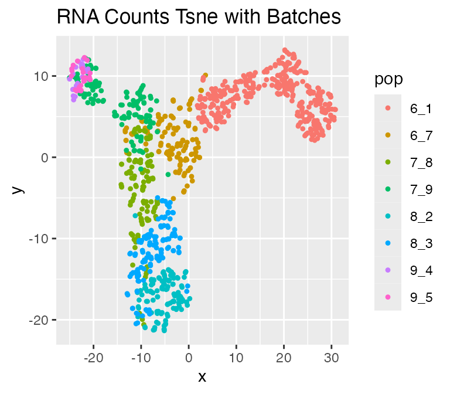

In this tutorial, we will demonstrate how to use scMultiSim to simulate multi-omics data with different biological effects, including:
- Simulating true RNA counts and ATAC-seq data
- Controlling the cell population and GRN effects
- Adding technical variation and batch effect to the true counts
- Adjusting the parameters to control different biological effects
We first load the package:
library("scMultiSim")Simulating True Counts
scMultiSim first generates the true RNA counts, and then add
technical variation and batch effect to the true counts. To simulate
true counts, call sim_true_counts(options) where
options is a list. You can use
scmultisim_help() to get help on the options, or like
scmulti_help("num.cells") to get help on the options for a
specific function.
scmultisim_help("options")GRN and Differentiation Tree
Before start, we define a utility function to modify a list.
list_modify <- function (curr_list, ...) {
args <- list(...)
for (i in names(args)) {
curr_list[[i]] <- args[[i]]
}
curr_list
}The minimal input to scMultiSim is a differentiation
tree, and you can optionally provide ground truth for GRN and
cell-cell interactions. The differentiation tree is an R phylo object,
which can be created using e.g. ape::read.tree() or
ape::rtree(). It controls the cell population structure:
each node of the tree should represent a cell type, and connected nodes
indicate the differentiation relationship between cell types.
scMultiSim provides this explicit control on the cell population
structure while preserving all other effects (such as GRN and Cell-Cell
Interactions), so you can generate any cell trajectory or
clustering structure you want, which is especially useful for
benchmarking trajectory inference and clustering methods.
If generating a continuous population, this tree specifies the cell differentiation trajectory; if generating a discrete population, the tips of this tree will be the clusters (cell types are the terminal cell states).
scMultiSim also provides three differentiation trees.
Phyla5() and Phyla3() return bifurcating trees
with 5 and 3 leaves respectively. Phyla1() returns only a
single branch, which can be useful when we don’t want any specific
trajectory.
##
## Phylogenetic tree with 5 tips and 4 internal nodes.
##
## Tip labels:
## 1, 2, 3, 4, 5
##
## Rooted; includes branch lengths.
Phyla3(plotting = TRUE)##
## Phylogenetic tree with 3 tips and 2 internal nodes.
##
## Tip labels:
## 1, 2, 3
##
## Rooted; includes branch lengths.
# It's not possible to plot Phyla1() because it only contains 1 branch connecting two nodes.
Phyla1()##
## Phylogenetic tree with 1 tips and 1 internal nodes.
##
## Tip labels:
## A
##
## Rooted; includes branch lengths.If you only need n cell clusters without any specific
trajectory, you can use code like below to generate a simple tree with
n leaves.
# tree with four leaves
ape::read.tree(text = "(A:1,B:1,C:1,D:1);")##
## Phylogenetic tree with 4 tips and 1 internal nodes.
##
## Tip labels:
## A, B, C, D
##
## Unrooted; includes branch lengths.The GRN should be a data frame with 3 columns, each representing the
target, regulator, and effect.
The target and regulator should be gene names, which can be integers or
strings. The effect should be a numeric value, indicating the effect of
the regulator on the target.
scMultiSim provides two sample GRNs, GRN_params_100 and
GRN_params_1139, which contain 100 and 1139 genes
respectively. Let’s load them first.
## regulated.gene regulator.gene regulator.effect
## 1 16 10 1.768699
## 2 29 10 1.675360
## 3 62 10 3.723509
## 4 55 10 2.866182
## 5 81 80 4.020744
## 6 73 80 2.353371Simulating True Counts
Now, we create the options list for the simulation session. In the following example, we simulate 500 cells with 50 CIFs.
The number of genes is determined by the option
num.genes or the number of genes in the GRN. If
num.genes is not specified, the number of genes will be the
number of unique genes in the GRN, plus a fraction of genes that are not
regulated by any other genes. this is controlled by the option
unregulated.gene.ratio (default is 0.1). Since our
GRN_params contains 100 gene names, 10% more genes will be
added to the simulation, and the number of genes in the simulated data
will be 110. If you don’t need to simulate GRN effects, simply set
GRN = NA.
The cif.sigma controls the variance of the CIFs.
Usually, with cif.sigma = 0.1, the trajectory will be very
clear, while with cif.sigma = 1, the trajectory will be
more noisy. We use cif.sigma = 0.5 in this example.
We also have do.velocity option to use the Kinetic model
to simulate RNA velocity data.
options <- list(
rand.seed = 0,
GRN = GRN_params,
num.cells = 1000,
num.cifs = 50,
cif.sigma = 0.5,
tree = Phyla5(),
diff.cif.fraction = 0.8,
do.velocity = TRUE
)Omitting the GRN
Note that the minimal input to scMultiSim is the cell population
structure (differentiation tree) and number of cells. You can omit the
GRN by using GRN = NA:
options <- list(
GRN = NA
num.cells = 1000,
num.genes = 500,
tree = Phyla5(),
)Running the Simulation
Now we run the simulation and check what kind of data is in the returned result:
results <- sim_true_counts(options)## Time spent: 0.29 mins
names(results)## [1] ".grn" "unspliced_counts" ".options" ".n"
## [5] "region_to_gene" "atacseq_data" "giv" "kinetic_params"
## [9] "num_genes" "velocity" "cif" "hge_scale"
## [13] "counts" "cell_meta" "atac_counts" "region_to_tf"
## [17] "grn_params" "cell_time"Accessing the Results
The return value will be a scMultiSim Environment
object, and you can access various data and parameters using the
$ operator.
-
counts: Gene-by-cell scRNA-seq counts. -
atac_counts: Region-by-cell scATAC-seq counts. -
region_to_gene: Region-by-gene 0-1 marix indicating the corresponding relationship between chtomatin regions and genes. -
atacseq_data: The “clean” scATAC-seq counts without added intrinsic noise. -
cell_meta: A dataframe containing cell type labels and pseudotime information. -
cif: The CIF used during the simulation. -
giv: The GIV used during the simulation. -
kinetic_params: The kinetic parameters used during the simulation. -
.grn: The GRN used during the simulation. -
.grn$regulators: The list of TFs used by all gene-by-TF matrices. -
.grn$geff: Gene-by-TF matrix representing the GRN used during the simulation. -
.n: Other metadata, e.g..n$cellsis the number of cells.
If do.velocity is enabled, it has these additional
fields:
-
unspliced_counts: Gene-by-cell unspliced RNA counts. -
velocity: Gene-by-cell RNA velocity ground truth. -
cell_time: The pseudotime at which the cell counts were generated.
If dynamic GRN is enabled, it has these additional fields:
-
cell_specific_grn: A list of lengthn_cells. Each element is a gene-by-TF matrix, indicating the cell’s GRN.
If cell-cell interaction is enabled, it has these additional fields:
-
grid: The grid object used during the simulation. -
grid$get_neighbours(i): Get the neighbour cells of celli. -
cci_locs: A dataframe containing the X and Y coordinates of each cell. -
cci_cell_type_param: A dataframe containing the CCI network ground truth: all ligand-receptor pairs between each pair of cell types. -
cci_cell_types: For continuous cell population, the sub-divided cell types along the trajectory used when simulating CCI.
If it is a debug session (debug = TRUE), a
sim field is available, which is an environment contains
all internal states and data structures.
Visualizing the Results
We can visualize the true counts and ATAC-seq data using
plot_tsne():
plot_tsne(log2(results$counts + 1),
results$cell_meta$pop,
legend = 'pop', plot.name = 'True RNA Counts Tsne')
plot_tsne(log2(results$atacseq_data + 1),
results$cell_meta$pop,
legend = 'pop', plot.name = 'True ATAC-seq Tsne')Since we also have RNA velocity enabled, the results
also contains the following data: - velocity: the true RNA
velocity (genes x cells) - unspliced_counts: the true
unspliced RNA counts (genes x cells)
plot_rna_velocity(results, arrow.length = 2)## $raw##
## $normalized##
## $knn_normalizedWe can inspect the gene-gene correlation using
plot_gene_module_cor_heatmap(results):
plot_gene_module_cor_heatmap(results)## NULLAdding Technical Variation and Batch Effect
We can also add the technical variation and batch effect to the true counts.
Adding technical noise
Simply use the add_expr_noise function to add technical
noise to the dataset.
add_expr_noise(
results,
# options go here
alpha_mean = 1e4
)## Adding experimental noise...
## 50..100..150..200..250..300..350..400..450..500..550..600..650..700..750..800..850..900..950..1000..Using atac_counts## Time spent: 1.02 minsA counts_obs field will be added to the
results object.
This function also accepts a list of options. See the documentation for more details.
-
protocol:"umi"or"nonUMI", whether simulate the UMI protocol. -
alpha_mean,alpha_sd: Mean and deviation of rate of subsampling of transcripts during capture step. -
alpha_gene_mean,alpha_gene_sd:alphaparameters, but gene-wise. -
depth_mean,depth_sd: Mean and deviation of sequencing depth. -
gene_len: A vector with lengths of all genes. -
atac.obs.prob: For each integer count of a particular region for a particular cell, the probability the count will be observed. -
atac.sd.frac: The fraction of ATAC-seq data value used as the standard deviation of added normally distrubted noise. -
randseed: random seed.
Adding batch effects
Finally, use the divide_batches function to add batch
effects.
divide_batches(
results,
nbatch = 2,
effect = 1
)## Adding batch effects...A counts_with_batches field will be added to the
results object.
The available options are:
-
nbatch: Number of batches. -
effect: The batch effect size.
We can visualize the result with technical noise and batches:
plot_tsne(log2(results$counts_with_batches + 1),
results$cell_meta$pop,
legend = 'pop', plot.name = 'RNA Counts Tsne with Batches')
Adjusting Parameters
scMultiSim provides various parameters to control each type of biological effect. Here, we describe the most important parameters and how they affect the simulation results:
-
num.cifs,diff.cif.fraction -
cif.mean,cif.sigma discrete.cifintinsic.noise
For a complete list of parameters, please check out the Parameter Guide page in the documentation.
The Shiny App
scMultiSim provides a Shiny app to help you generate the options list
and visualize the effects of different parameters. It is highly
recommended to use the Shiny app to explore the available parameters.
You can run the app by calling run_shiny().

Deciding Number of CIFs: num.cifs
In scMultiSim, user use num.cifs to control the total
number of diff-CIF and non-diff-CIFs. The number of CIFs should be large
enough to represent the cell population structure and gene information.
By default, num.cifs is set to 50, which is a good starting
point for most cases. However, each gene’s base expression is affected
by two random diff-CIF entries, therefore if you have a large number of
genes, they may have similar expression patterns, which may not be
ideal. It is recommended to increase num.cifs to 50-100 if
you have more than 2000 genes. If you have a small number of genes (less
than 1000), you can also decrease num.cifs to 20-40.
Discrete Cell Population: discrete.cif
We can also simulate discrete cell population by setting
discrete.cif = TRUE. In this case, each tip of the tree
will be one cell type, therefore there will be 5 clusters in the
following result.
options <- list(
rand.seed = 0,
GRN = GRN_params,
num.cells = 1000,
num.cifs = 50,
tree = Phyla5(),
diff.cif.fraction = 0.8,
discrete.cif = TRUE
)
results <- sim_true_counts(options)## Time spent: 0.18 minsAdjusting the Effect of Cell Population:
diff.cif.fraction
In scMultiSim, the differentiation tree provides explicit control of
the cell population. The effect of the tree can be adjusted by the
option diff.cif.fraction, which controls how many CIFs are
affected by the cell population. With a larger
diff.cif.fraction, the effect of cell population will be
larger and you may see a clearer trajectory or well separated clusters.
With a smaller diff.cif.fraction, the resulting RNA counts
will be more affected by other factors, such as the GRN.
Now let’s visualize the trajectory with different
diff.cif.fraction values:
options <- list(
rand.seed = 0,
GRN = GRN_params,
num.cells = 1000,
num.cifs = 50,
tree = Phyla5(),
diff.cif.fraction = 0.8
)
results <- sim_true_counts(
options %>% list_modify(diff.cif.fraction = 0.2))## Time spent: 0.09 mins
plot_tsne(log2(results$counts + 1),
results$cell_meta$pop,
legend = 'pop', plot.name = 'RNA Counts (diff.cif.fraction = 0.2)')
results <- sim_true_counts(
options %>% list_modify(diff.cif.fraction = 0.8))## Time spent: 0.09 minsAdjusting the Inherent Cell Heterogeneity: cif.mean and
cif.sigma
The inherent cell heterogeneity is controlled by the non-diff-CIF,
which is sampled from a normal distribution with mean
cif.mean and standard deviation cif.sigma.
Therefore, the larger cif.sigma is, the larger the inherent
cell heterogeneity is.
Now, let’s visualize the effect of cif.sigma:
options <- list(
rand.seed = 0,
GRN = GRN_params,
num.cells = 1000,
num.cifs = 50,
tree = Phyla5(),
diff.cif.fraction = 0.8,
cif.sigma = 0.5
)
results <- sim_true_counts(
options %>% list_modify(cif.sigma = 0.1))## Time spent: 0.09 mins
plot_tsne(log2(results$counts + 1),
results$cell_meta$pop,
legend = 'pop', plot.name = 'RNA Counts (cif.sigma = 0.1)')
results <- sim_true_counts(
options %>% list_modify(cif.sigma = 1.0))## Time spent: 0.09 minsAdjusting the Intrinsic Noise: intinsic.noise
If we set do.velocity = FALSE, scMultiSim will simulate
the RNA counts using the Beta-Poisson model, which is faster but doesn’t
output RNA velocity. When using the Beta-Possion model, scMultiSim
provides a intrinsic.noise parameter to control the
intrinsic noise during the transcription process. By default,
intrinsic.noise is set to 1, which means the true counts
will be sampled from the Beta-Poisson model. If we set
intrinsic.noise to a smaller value like 0.5, the true
counts will be 0.5 * (theoretical mean) + 0.5 * (sampled from the
Beta-Poisson model). More intrinsic noise will make the encoded
effects (e.g. GRN) harder to be inferred.
options <- list(
rand.seed = 0,
GRN = GRN_params,
num.cells = 1000,
num.cifs = 50,
tree = Phyla5(),
diff.cif.fraction = 0.8,
intrinsic.noise = 1
)
results <- sim_true_counts(
options %>% list_modify(intrinsic.noise = 0.5))## Time spent: 0.09 mins
plot_tsne(log2(results$counts + 1),
results$cell_meta$pop,
legend = 'pop', plot.name = 'RNA Counts (intrinsic.noise = 0.5)')
results <- sim_true_counts(
options %>% list_modify(intrinsic.noise = 1))## Time spent: 0.09 minsSimulating Dynamic GRN
First, call the following function to check the usage of dynamic GRN.
scmultisim_help("dynamic.GRN")## Dynamic GRN deletes and creates some edges in the GRN in each epoch.
## One epoch contains multiple steps, and the change is done gradually in steps.
## The specific GRN at each step will be used by one or more cells sequentially.
## When an epoch is done, another epoch will start.
##
## Available options for dynamic.GRN:
## - seed: the random seed
## - num.steps: number of steps in each epoch.
## - cell.per.step: how many cells share the GRN in the same step.
## - involved.genes: a new edge will only be created within these specified genes.
## The default value is NA, which will use all existing genes in the GRN.
## - num.changing.edges: if < 1, it means the portion of edges added/deleted in each epoch.
## if >= 1, it means the number of edges added/deleted in each epoch.
## - create.tf.edges: whether a new edge can connect two TFs in the GRN.
## - weight.mean: the mean value of the weight for a newly created edge.
## The default value is NA, meaning that it will use the mean value of the input GRN.
## - weight.sd: the standard deviation of the weight for a newly created edge.
##
## See the returned list for the default values.## NULLHere we use Phyla1() as the differentiation tree to
remove the effect of the trajectory. Additionally, we can use
discrete.cif = TRUE to simulate discrete cell
population.
options_ <- list(
rand.seed = 0,
GRN = GRN_params,
num.cells = 1000,
num.cifs = 50,
tree = Phyla1(),
diff.cif.fraction = 0.8,
do.velocity = FALSE,
dynamic.GRN = list(
cell.per.step = 3,
num.changing.edges = 5,
weight.mean = 0,
weight.sd = 4
)
)
results <- sim_true_counts(options_)## Time spent: 0.09 minsresults$cell_specific_grn is a list containing the gene
effects matrix for each cell. Each row is a target and each column is a
regulator. The corresponding gene names are displayed as column and row
names.
# GRN for cell 1 (first 10 rows)
results$cell_specific_grn[[1]][1:10,]## 2 6 10 19 80 91
## 1 2.250484 1.824607 1.941613 4.268812 0 0
## 2 0.000000 0.000000 0.000000 0.000000 0 0
## 3 2.184071 0.000000 0.000000 0.000000 0 0
## 4 1.634807 0.000000 0.000000 0.000000 0 0
## 5 4.677883 4.301893 2.090473 4.047174 0 0
## 6 0.000000 0.000000 0.000000 0.000000 0 0
## 7 3.306285 2.673968 2.414780 3.548154 0 0
## 8 2.707510 4.653263 1.357980 1.829304 0 0
## 9 1.501430 1.970649 4.359262 3.915318 0 0
## 10 0.000000 0.000000 0.000000 0.000000 0 0Since we set cell.per.step = 3, we expect each adjacent
3 cells share the same GRN:
## [1] TRUE## [1] TRUE## [1] FALSESession Information
## R version 4.3.0 (2023-04-21)
## Platform: aarch64-apple-darwin20 (64-bit)
## Running under: macOS 14.6.1
##
## Matrix products: default
## BLAS: /Library/Frameworks/R.framework/Versions/4.3-arm64/Resources/lib/libRblas.0.dylib
## LAPACK: /Library/Frameworks/R.framework/Versions/4.3-arm64/Resources/lib/libRlapack.dylib; LAPACK version 3.11.0
##
## locale:
## [1] en_US.UTF-8/en_US.UTF-8/en_US.UTF-8/C/en_US.UTF-8/en_US.UTF-8
##
## time zone: America/Toronto
## tzcode source: internal
##
## attached base packages:
## [1] stats graphics grDevices utils datasets methods base
##
## other attached packages:
## [1] dplyr_1.1.4 scMultiSim_1.2.0 testthat_3.2.1 knitr_1.45
## [5] BiocStyle_2.30.0
##
## loaded via a namespace (and not attached):
## [1] mnormt_2.1.1 bitops_1.0-7
## [3] remotes_2.4.2.1 phangorn_2.11.1
## [5] rlang_1.1.4 magrittr_2.0.3
## [7] matrixStats_1.3.0 compiler_4.3.0
## [9] systemfonts_1.0.5 vctrs_0.6.5
## [11] maps_3.4.2 combinat_0.0-8
## [13] quadprog_1.5-8 stringr_1.5.1
## [15] profvis_0.3.8 crayon_1.5.3
## [17] pkgconfig_2.0.3 fastmap_1.1.1
## [19] XVector_0.42.0 ellipsis_0.3.2
## [21] labeling_0.4.3 caTools_1.18.2
## [23] utf8_1.2.4 promises_1.2.1
## [25] rmarkdown_2.28 markdown_1.13
## [27] sessioninfo_1.2.2 ragg_1.2.7
## [29] purrr_1.0.2 xfun_0.45
## [31] zlibbioc_1.48.2 cachem_1.0.8
## [33] clusterGeneration_1.3.8 GenomeInfoDb_1.38.8
## [35] jsonlite_1.8.8 highr_0.10
## [37] later_1.3.2 DelayedArray_0.28.0
## [39] KernelKnn_1.1.5 parallel_4.3.0
## [41] R6_2.5.1 bslib_0.6.1
## [43] stringi_1.8.3 pkgload_1.3.4
## [45] brio_1.1.4 GenomicRanges_1.54.1
## [47] jquerylib_0.1.4 numDeriv_2016.8-1.1
## [49] assertthat_0.2.1 Rcpp_1.0.12
## [51] bookdown_0.37 SummarizedExperiment_1.32.0
## [53] iterators_1.0.14 optimParallel_1.0-2
## [55] usethis_2.2.2 IRanges_2.36.0
## [57] httpuv_1.6.14 Matrix_1.6-5
## [59] igraph_2.0.3 tidyselect_1.2.1
## [61] abind_1.4-5 rstudioapi_0.15.0
## [63] yaml_2.3.8 gplots_3.1.3.1
## [65] doParallel_1.0.17 codetools_0.2-19
## [67] miniUI_0.1.1.1 pkgbuild_1.4.3
## [69] lattice_0.22-5 tibble_3.2.1
## [71] Biobase_2.62.0 shiny_1.8.0
## [73] withr_3.0.0 coda_0.19-4.1
## [75] evaluate_0.23 Rtsne_0.17
## [77] phytools_2.3-0 desc_1.4.3
## [79] urlchecker_1.0.1 pillar_1.9.0
## [81] BiocManager_1.30.22 MatrixGenerics_1.14.0
## [83] KernSmooth_2.23-22 foreach_1.5.2
## [85] stats4_4.3.0 generics_0.1.3
## [87] rprojroot_2.0.4 RCurl_1.98-1.16
## [89] S4Vectors_0.40.2 ggplot2_3.5.1
## [91] munsell_0.5.1 scales_1.3.0
## [93] gtools_3.9.5 xtable_1.8-4
## [95] glue_1.7.0 scatterplot3d_0.3-44
## [97] tools_4.3.0 fs_1.6.3
## [99] fastmatch_1.1-4 grid_4.3.0
## [101] ape_5.8 devtools_2.4.5
## [103] colorspace_2.1-0 nlme_3.1-164
## [105] GenomeInfoDbData_1.2.11 cli_3.6.3
## [107] DEoptim_2.2-8 textshaping_0.3.7
## [109] fansi_1.0.6 expm_0.999-9
## [111] S4Arrays_1.2.1 gtable_0.3.5
## [113] zeallot_0.1.0 sass_0.4.8
## [115] digest_0.6.36 BiocGenerics_0.48.1
## [117] SparseArray_1.2.4 farver_2.1.2
## [119] htmlwidgets_1.6.4 memoise_2.0.1
## [121] htmltools_0.5.7 pkgdown_2.0.9
## [123] lifecycle_1.0.4 mime_0.12
## [125] MASS_7.3-60.0.1